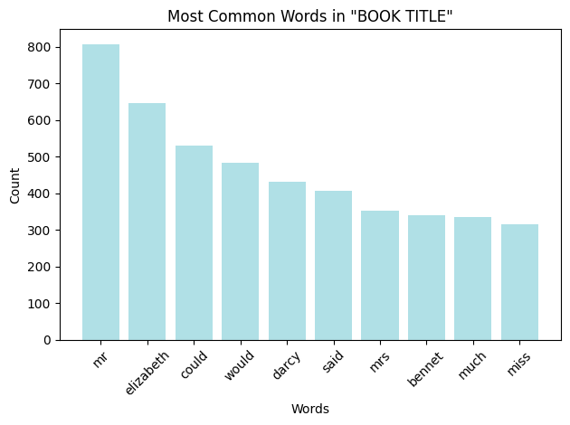
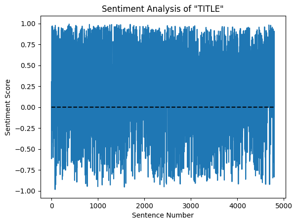
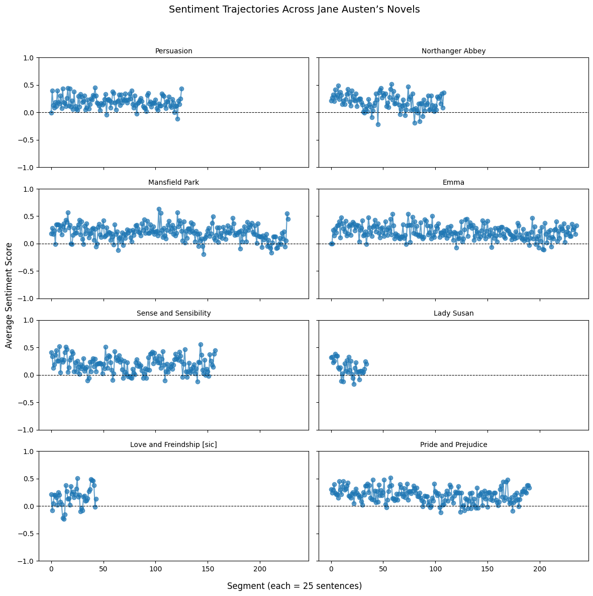

In honor of Jane Austen’s 250th birthday we will be using her novels to begin to explore text analysis. You’ll learn how to analyze the text of Jane Austen’s novels using Python. We’ll cover text collection, sentiment analysis, and some basic visualization techniques.
First let’s load some libraries that we will need for this analysis.
## Import necessary libraries## data table manipulation and analysisimport pandas as pd## regular expressions, csv handling, counting elementsimport reimport csvfrom collections import Counter## handling byte streams and https requestsfrom io import BytesIOimport requests## sentiment analysis and natural language processingimport nltkfrom nltk.sentiment import SentimentIntensityAnalyzer ## library for sentiment analysisfrom nltk.corpus import stopwordstry: stop_words =set(stopwords.words('english'))except: nltk.download('stopwords') stop_words =set(stopwords.words('english'))## plotting and visualizationimport matplotlib.pyplot as plt
[nltk_data] Downloading package stopwords to /root/nltk_data...
[nltk_data] Unzipping corpora/stopwords.zip.
Our goals in this tutorial is to: 1. Identify the top ten most common words in the Jane Austen text of your choice. 2. Compare the sentiment analysis scores across all of Jane Austen’s works.
Before we do that we have to figure out how to easily access the text for Austen’s entire corpus. For our purposes we can use Project Gutenberg to grab the text. We’re going to first grab the entire Project Gutenberg catalog to see what texts are included.
Project Gutenberg is an online, free library of more than 75,000 free eBooks especially older, classic works in the public domain.
We have a URL link to a catalog file which we’re going to read in as a Table using pandas and requests.
gutenberg_catalog_url ="https://www.gutenberg.org/cache/epub/feeds/pg_catalog.csv.gz"## URL that points to the entire catalog filer = requests.get(gutenberg_catalog_url) ## using requests module grab the filewith BytesIO(r.content) as f: ## unzip file and save as table object in variable `df` df = pd.read_csv(f, compression='gzip', quoting=csv.QUOTE_ALL)df.head()
Text#
Type
Issued
Title
Language
Authors
Subjects
LoCC
Bookshelves
0
1
Text
1971-12-01
The Declaration of Independence of the United ...
en
Jefferson, Thomas, 1743-1826
United States -- History -- Revolution, 1775-1...
E201; JK
Politics; American Revolutionary War; United S...
1
2
Text
1972-12-01
The United States Bill of Rights\r\nThe Ten Or...
en
United States
Civil rights -- United States -- Sources; Unit...
JK; KF
Politics; American Revolutionary War; United S...
2
3
Text
1973-11-01
John F. Kennedy's Inaugural Address
en
Kennedy, John F. (John Fitzgerald), 1917-1963
United States -- Foreign relations -- 1961-196...
E838
Category: Essays, Letters & Speeches; Category...
3
4
Text
1973-11-01
Lincoln's Gettysburg Address\r\nGiven November...
en
Lincoln, Abraham, 1809-1865
Consecration of cemeteries -- Pennsylvania -- ...
E456
US Civil War; Category: Essays, Letters & Spee...
4
5
Text
1975-12-01
The United States Constitution
en
United States
United States -- Politics and government -- 17...
JK; KF
United States; Politics; American Revolutionar...
A couple things to consider: - What do you notice about the data table? - What variables are there? - How might we identify the texts that belong to Jane Austen?
You might have said that we can select just those rows where ‘Austen, Jane’ appears in the Authors column. Let’s try that!
df[df['Authors'].str.contains("Austen, Jane", na =False)]
Text#
Type
Issued
Title
Language
Authors
Subjects
LoCC
Bookshelves
104
105
Text
1994-02-01
Persuasion
en
Austen, Jane, 1775-1817
England -- Social life and customs -- 19th cen...
PR
Category: Novels; Category: British Literature
120
121
Text
1994-04-01
Northanger Abbey
en
Austen, Jane, 1775-1817
England -- Social life and customs -- 19th cen...
PR
Gothic Fiction; Category: Novels; Category: Cl...
140
141
Text
1994-06-01
Mansfield Park
en
Austen, Jane, 1775-1817
England -- Fiction; Young women -- Fiction; Lo...
PR
Category: Novels; Category: British Literature
157
158
Text
1994-08-01
Emma
en
Austen, Jane, 1775-1817
Humorous stories; England -- Fiction; Young wo...
PR
Category: Novels; Category: British Literature
160
161
Text
1994-09-01
Sense and Sensibility
en
Austen, Jane, 1775-1817
England -- Social life and customs -- 19th cen...
PR
Category: Romance; Category: Novels; Category:...
927
946
Text
1997-06-01
Lady Susan
en
Austen, Jane, 1775-1817
England -- Fiction; Widows -- Fiction; Mate se...
PR
Category: Novels; Category: British Literature
1190
1212
Text
1998-02-01
Love and Freindship [sic]
en
Austen, Jane, 1775-1817
Essays; Epistolary fiction; England -- Social ...
PR
Category: Romance; Category: Humour; Category:...
1320
1342
Text
1998-06-01
Pride and Prejudice
en
Austen, Jane, 1775-1817
England -- Fiction; Young women -- Fiction; Lo...
PR
Best Books Ever Listings; Harvard Classics; Ca...
19768
19839
Sound
2006-11-18
Emma
en
Austen, Jane, 1775-1817
Humorous stories; England -- Fiction; Young wo...
PR
NaN
20611
20682
Sound
2007-02-03
Northanger Abbey
en
Austen, Jane, 1775-1817
England -- Social life and customs -- 19th cen...
PR
NaN
20615
20686
Sound
2007-02-03
Pride and Prejudice
en
Austen, Jane, 1775-1817
England -- Fiction; Young women -- Fiction; Lo...
PR
Best Books Ever Listings; Harvard Classics
20616
20687
Sound
2007-02-03
Pride and Prejudice
en
Austen, Jane, 1775-1817
England -- Fiction; Young women -- Fiction; Lo...
PR
Best Books Ever Listings; Harvard Classics
21768
21839
Text
2007-06-15
Sense and Sensibility
en
Austen, Jane, 1775-1817; Dobson, Austin, 1840-...
England -- Social life and customs -- 19th cen...
PR
Category: Romance; Category: Novels; Category:...
22882
22953
Sound
2007-10-01
Lady Susan
en
Austen, Jane, 1775-1817
England -- Fiction; Widows -- Fiction; Mate se...
PR
NaN
22883
22954
Sound
2007-10-01
Love and Freindship [sic]
en
Austen, Jane, 1775-1817
Epistolary fiction; England -- Social life and...
PR
NaN
22891
22962
Sound
2007-10-01
Mansfield Park
en
Austen, Jane, 1775-1817
England -- Fiction; Young women -- Fiction; Lo...
PR
NaN
22892
22963
Sound
2007-10-01
Persuasion
en
Austen, Jane, 1775-1817
England -- Social life and customs -- 19th cen...
PR
NaN
22893
22964
Sound
2007-10-01
Sense and Sensibility
en
Austen, Jane, 1775-1817
England -- Social life and customs -- 19th cen...
PR
NaN
25875
25946
Text
2008-07-01
Gevoel en verstand
nl
Austen, Jane, 1775-1817; Loman-van Uildriks, G...
England -- Social life and customs -- 19th cen...
PR
Category: Romance; Category: Novels; Category:...
26230
26301
Sound
2008-08-01
Pride and Prejudice
en
Austen, Jane, 1775-1817
England -- Fiction; Young women -- Fiction; Lo...
PR
Best Books Ever Listings
31027
31100
Text
2010-01-25
The Complete Project Gutenberg Works of Jane A...
en
Austen, Jane, 1775-1817; Widger, David, 1932-2...
Love stories, English; England -- Social life ...
PR
Category: Romance; Category: Novels; Category:...
33315
33388
Text
2010-08-09
Raison et sensibilité, ou les deux manières d'...
fr
Austen, Jane, 1775-1817; Montolieu, Isabelle d...
England -- Social life and customs -- 19th cen...
PR
FR Littérature; Category: Romance; Category: N...
35078
35151
Text
2011-02-03
Raison et sensibilité, ou les deux manières d'...
fr
Austen, Jane, 1775-1817; Montolieu, Isabelle d...
England -- Social life and customs -- 19th cen...
PR
FR Littérature; Category: Romance; Category: N...
35090
35163
Text
2011-02-04
Raison et sensibilité, ou les deux manières d'...
fr
Austen, Jane, 1775-1817; Montolieu, Isabelle d...
England -- Social life and customs -- 19th cen...
PR
FR Littérature; Category: Romance; Category: N...
36703
36777
Text
2011-07-20
Persuasion
fr
Austen, Jane, 1775-1817; Letorsay, Madame [Tra...
England -- Social life and customs -- 19th cen...
PR
FR Littérature; Category: Romance; Category: N...
37357
37431
Text
2011-09-15
Pride and Prejudice, a play founded on Jane Au...
en
MacKaye, Steele, Mrs., 1845-1924; Austen, Jane...
England -- Drama; Courtship -- Drama; Young wo...
PR
Category: Plays/Films/Dramas; Category: Britis...
37560
37634
Text
2011-10-05
Raison et sensibilité, ou les deux manières d'...
fr
Austen, Jane, 1775-1817; Montolieu, Isabelle d...
England -- Social life and customs -- 19th cen...
PR
FR Littérature; Category: Novels; Category: Br...
42003
42078
Text
2013-02-12
The Letters of Jane Austen\r\nSelected from th...
en
Austen, Jane, 1775-1817; Coolidge, Susan, 1835...
Novelists, English -- 19th century -- Correspo...
PR
Category: Biographies; Category: Essays, Lette...
42596
42671
Text
2013-05-09
Pride and Prejudice
en
Austen, Jane, 1775-1817; Chapman, R. W. (Rober...
England -- Fiction; Young women -- Fiction; Lo...
PR
Best Books Ever Listings; Category: Romance; C...
43666
43741
Text
2013-09-16
Old friends and new fancies
en
Brinton, Sybil G. (Sybil Grace), 1874-1928; Au...
Mate selection -- Fiction; Courtship -- Fictio...
PR
Category: Romance; Category: Novels; Category:...
45111
45186
Text
2014-03-22
Ylpeys ja ennakkoluulo
fi
Austen, Jane, 1775-1817; Joutsen, O. A. (Otto ...
England -- Fiction; Young women -- Fiction; Lo...
PR
Category: Romance; Category: Novels; Category:...
63488
63569
Text
2020-10-28
The Watsons: By Jane Austen, Concluded by L. O...
en
Austen, Jane, 1775-1817; Oulton, L.; Austen-Le...
England -- Social life and customs -- 19th cen...
PR
Category: Novels; Category: British Literature
74053
74233
Text
2024-08-12
Fragment of a novel written by Jane Austen, Ja...
en
Austen, Jane, 1775-1817; Chapman, R. W. (Rober...
England -- Social life and customs -- 19th cen...
PR
Category: Novels; Category: British Literature
76934
77117
Text
2025-10-24
The Watsons
en
Austen, Jane, 1775-1817; Brown, Francis, 1874-...
England -- Social life and customs -- 19th cen...
PR
NaN
78469
78656
Text
2026-05-11
Duologues and scenes from the novels of Jane A...
en
Filippi, Rosina, 1866-1930; Austen, Jane, 1775...
England -- Social life and customs -- Drama; A...
PR
NaN
What do you notice? Take a look in the Type, Language, Title, and Author columns.
Maybe you noticed that the there are a combination of both text and sound (audio) book options in the table. We’re only concerned with text data here so we can filter the sound ones out.
You might have also noticed that in the Language column that we have several French texts along with a few other languages as well. We can filter for only english text as well. __________________________________________________________________________
The code snippet below filters the df DataFrame to select only entries that meet specific criteria for Jane Austen’s novels:
df['Authors'].str.contains('Austen, Jane', na=False): This checks the ‘Authors’ column for entries that contain the string ‘Austen, Jane’. The na=False argument ensures that NaN (Not a Number) values in the ‘Authors’ column are treated as False and don’t raise an error.
df['Type'] == 'Text': This filters for entries where the ‘Type’ column is exactly ‘Text’, ensuring we’re only looking at actual books and not other content types.
df['Language'] == 'en': This restricts the results to books written in English.
These three conditions are combined using the & (AND) operator, so only rows that satisfy all three conditions are selected.
This still leaves us with several replicates of the same book (reprints) along with other texts that we might be less interested in such as the anthology works, adaptations, and fragments of novels. Let’s now select just for texts written solely by Jane Austen.
Now let’s return to our first goal: find the 10 most common words in the Austen novel of your choice.
In the first line below, replace the filler text with the Austen novel of your choice from the table above.
The code:
book_id = austen_rows[austen_rows['Title'] == 'Pride and Prejudice']['Text#'].values[0]
filters the table for the single row that reflects the book of choice (in this case “Pride and Prejudice”) and extracts the ID number (stored in the “Text#” column).
Using this ID number, we can use the requests package to download the entire text for your given book. If it returns a successful status code, it’ll print Successfully downloaded book ID ## to the screen otherwise it’ll indicate a failure to download the book.
#book_id = austen_rows[austen_rows['Title'] == 'INSERT BOOK NAME HERE']['Text#'].values[0]book_id = austen_rows[austen_rows['Title'] =='Pride and Prejudice']['Text#'].values[0]book_url =f"https://www.gutenberg.org/cache/epub/{book_id}/pg{book_id}.txt"response = requests.get(book_url) ## this makes the call to the website to download the textif response.status_code ==200: # check if the request was successful book_text = response.textprint(f"Successfully downloaded book ID {book_id}")else:print(f"Failed to download book ID {book_id}")
Successfully downloaded book ID 1342
We can view the top part of the book in the next cell to ensure that the correct book downloaded. In this case, we’re going to ask to see the first 1000 characters by using list indices.
book_text[:1000]
'The Project Gutenberg eBook of Pride and Prejudice\r\n \r\nThis eBook is for the use of anyone anywhere in the United States and\r\nmost other parts of the world at no cost and with almost no restrictions\r\nwhatsoever. You may copy it, give it away or re-use it under the terms\r\nof the Project Gutenberg License included with this eBook or online\r\nat www.gutenberg.org. If you are not located in the United States,\r\nyou will have to check the laws of the country where you are located\r\nbefore using this eBook.\r\n\r\nTitle: Pride and Prejudice\r\n\r\nAuthor: Jane Austen\r\n\r\n\r\n \r\nRelease date: June 1, 1998 [eBook #1342]\r\n Most recently updated: February 10, 2026\r\n\r\nLanguage: English\r\n\r\nOther information and formats: www.gutenberg.org/ebooks/1342\r\n\r\nCredits: Chuck Greif and the Online Distributed Proofreading Team at http://www.pgdp.net (This file was produced from images available at The Internet Archive)\r\n\r\n\r\n*** START OF THE PROJECT GUTENBERG EBOOK PRIDE AND PREJUDICE ***\r\n\r\n\r\n\r\n\r'
You might notice towards the bottom of this excerpt from the text that there’s the text “*** START OF THE PROJECT GUTENBERG BOOK” indicating the start of the body of the text of the novel.
We can find the index position of the start of the string *** START OF THE PROJECT GUTENBERG BOOK by using the find function. find is a built-in method to strings and it returns the index of the first occurence of whatever value is specified. Looking at our string above, we can see one of the first words is “Project”, let’s find what index this starts out at.
book_text.find("Project")
4
Index
Value
0
T
1
h
2
e
3
SPACE
4
P
where the P in index 4 is the start of the word Project!
Now that we know how find works, let’s use it to find the starting and ending indices for the main body of text.
## identify the index of the start of the textstart = book_text.find("*** START OF THE PROJECT GUTENBERG EBOOK")## identify the index of the end of the textend = book_text.find("*** END OF THE PROJECT GUTENBERG EBOOK")print(f"The book text starts at position {start} and ends at position {end}. There are a total of {len(book_text)} characters in this text.")
The book text starts at position 927 and ends at position 744280. There are a total of 763082 characters in this text.
Now that we know the starting and ending index positions of the main text, we can use string slicing to extract a portion of our large text.
String slicing is how we can extract a portion of a string by giving start and ending indicing.
Example:
STRING[START_INDEX:END_INDEX]
Remember indices are 0-based or start at 0!
## Extract the book text between the start and end markersbook_body_text = book_text[start:end]book_body_text[:2000]
'*** START OF THE PROJECT GUTENBERG EBOOK PRIDE AND PREJUDICE ***\r\n\r\n\r\n\r\n\r\n [Illustration:\r\n\r\n GEORGE ALLEN\r\n PUBLISHER\r\n\r\n 156 CHARING CROSS ROAD\r\n LONDON\r\n\r\n RUSKIN HOUSE\r\n ]\r\n\r\n [Illustration:\r\n\r\n _Reading Jane’s Letters._ _Chap 34._\r\n ]\r\n\r\n\r\n\r\n\r\n PRIDE.\r\n and\r\n PREJUDICE\r\n\r\n by\r\n Jane Austen,\r\n\r\n with a Preface by\r\n George Saintsbury\r\n and\r\n Illustrations by\r\n Hugh Thomson\r\n\r\n [Illustration: 1894]\r\n\r\n Ruskin 156. Charing\r\n House. Cross Road.\r\n\r\n London\r\n George Allen.\r\n\r\n\r\n\r\n\r\n CHISWICK PRESS:--CHARLES WHITTINGHAM AND CO.\r\n TOOKS COURT, CHANCERY LANE, LONDON.\r\n\r\n\r\n\r\n\r\n [Illustration:\r\n\r\n _To J. Comyns Carr\r\n in acknowledgment of all I\r\n owe to his friendship and\r\n advice, these illustrations are\r\n gratefully inscribed_\r\n\r\n _Hugh Thomson_\r\n ]\r\n\r\n\r\n\r\n\r\nPREFACE.\r\n\r\n[Illustration]\r\n\r\n\r\n_Walt Whitman has somewhere a fine and just distinction between “loving\r\nby allowance” and “loving with personal love.” This distinction applies\r\nto books as well as to men and women; and in the case of the not very\r\nnumerous authors who are the objects of the '
So now we have our book_body_text but you might notice that we have lots of extra characters such as new line characters (\r\n).
We can extract each word individually by using regular expressions (commonly referred to as regex).
Let’s examine the code we’ll use to do this re.findall(r'\b[a-z]+\b', book_body_text.lower())
Breaking this down step-by-step:
re.findall(pattern, string) - this function will search for the pattern given within the chosen string and return all non-overlapping matches in a list.
r'\b[a-z]+\b' - this particular pattern is asking for all instances of whole words of only lowercase letters. \b indicates the start and end of a word and [a-z] indicates a match for lowercase letters from a to z.
book_body_text.lower() - this converts all the text in the string to lowercase.
This should give us a list of words in the variable words now. Let’s try it.
import re ## library for regular expressionswords = re.findall(r'\b[a-z]+\b', book_body_text.lower())print(words[:100]) ## Print the first 100 words to see the cleaned textprint(len(words))
Great! So now that we have all of the words extracted, we can figure out our first goal: 1. Identify the top ten most common words in the Jane Austen text of your choice.
There’s a handy function for this from the package collections called Counter which will tally up the number of times each word appears in our list of words.
Once we get the word counts we can extract the top 10 most common words by using the built-in function .most_common(n) where n is the number of words you’d like it return.
from collections import Counterword_counts = Counter(words) ## count the frequency of each word in the list of wordsword_counts.most_common(10) ## Print the 10 most common words
So what were your top ten most common words? For Pride and Prejudice the most common words are:
the - 4657 instances
to - 4323
of - 3841
and - 3764
her - 2260
i - 2098
a - 2036
in - 1991
was - 1871
she - 1732
Do these seem like words that are unique to this novel? You might realize that these are actually mostly common words. In text analysis these extremely common words are called “stop words” and are often filtered out for analyses.
We could decide and set all the “stop words” manually, but instead we’re going to use another library called nltk (Natural Language Toolkit) which has a built-in list of common stop words.
We’re going to go ahead and import the library along with the specific module for stopwords. This includes downloadig the words if we haven’t already, and then selecting just the English subset of words.
import nltk ## library for natural language processingfrom nltk.corpus import stopwords ## library for stop wordsnltk.download('stopwords') ## Download the stop words list if you haven't alreadystop_words =set(stopwords.words('english')) ## Get the set of English stop words
[nltk_data] Downloading package stopwords to /root/nltk_data...
[nltk_data] Package stopwords is already up-to-date!
Let’s first take a look at the words included in this dataset. In the cell below once you run it, you should be able to scroll through all the words included in the dataset. What do you notice about the words contained within the list stop_words?
Now we want to iterate through our list of word counts that we extracted from the text of your chosing. For each word with it’s associated count, if it can be found list stop_words then we will delete or discard that word with the count.
for word inlist(word_counts.keys()):if word in stop_words: ## Check if the word is a stop worddel word_counts[word] ## Remove the stop word from the countsword_counts.most_common(10)
You should notice that your top ten most common words has now changed. For Pride and Prejudice, the new top ten most common words now include:
mr - 807 instances
elizabeth - 645
could - 530
would - 482
darcy - 430
said - 406
mrs - 353
bennet - 339
much - 335
miss - 315
We can also visualize the differences in counts for these top ten most common words in the text. In the cell below, we create a bar graph where each word is on the x-axis and the height of the bar corresponds to the number of instances of the word in the text. Feel free to adjust the graph, by changing the color of the bars in the line:
plt.bar(words, counts, color='blue')
You should also update the title of the figure with the title of the book that you chose.
plt.title('Most Common Words in "BOOK TITLE"')
most_common_words = word_counts.most_common(10) ## Get the most common wordswords, counts =zip(*most_common_words) ## Unzip the words and counts into separate listsplt.bar(words, counts, color='powderblue') # Update the color to your choice (Colors can be found: https://matplotlib.org/stable/gallery/color/named_colors.html)plt.xlabel('Words')plt.ylabel('Count')plt.title('Most Common Words in "BOOK TITLE"') # Update BOOK TITLE with your chosen novelplt.xticks(rotation=45) ## Rotate x-axis labels for better readabilityplt.tight_layout()

That brings us to completing our first goal: identifying the top ten most common words in your chosen Jane Austen novel.
Identify the top ten most common words in the Jane Austen text of your choice.
Compare the sentiment analysis scores across all of Jane Austen’s works.
Now we want to examine the sentiment across all texts. But what is a sentiment analysis?
nltk.download('vader_lexicon') ## Download the VADER lexicon for sentiment analysisfrom nltk.sentiment import SentimentIntensityAnalyzer ## library for sentiment analysissia = SentimentIntensityAnalyzer() ## Create a SentimentIntensityAnalyzer object
[nltk_data] Downloading package vader_lexicon to /root/nltk_data...
What is Sentiment Analysis?
Sentiment analysis is a natural language processing (NLP) technique used to determine the emotional tone behind a piece of text. It aims to classify the sentiment expressed in a text as positive, negative, or neutral. It’s widely used to understand public opinion, monitor brand reputation, and analyze customer feedback.
How does VADER (Valence Aware Dictionary and sEntiment Reasoner) work?
For this analysis, we are using a lexicon and rule-based sentiment analysis tool called VADER, which is specifically attuned to sentiments expressed in social media. However, it works well on other types of text too. VADER assigns sentiment scores to words in a text based on a pre-built lexicon (a dictionary of words with their sentiment intensity). It then combines these scores, considering factors like punctuation (e.g., ‘!!!!’), capitalization (e.g., ‘GREAT’), and the presence of intensifiers (e.g., ‘very’, ‘extremely’) or negators (e.g., ‘not’, ‘isn’t’) to produce a final sentiment score for the entire text.
The main output from VADER is a compound score, which is a normalized, weighted composite score ranging from -1 (most extreme negative) to +1 (most extreme positive). We will be focusing on this compound score to assess the sentiment of Jane Austen’s novels.
The SentimentIntensityAnalyzer from nltk.sentiment is initialized. When you pass a sentence to its polarity_scores method, it returns a dictionary with four scores:
neg: The probability of the sentence being negative.
neu: The probability of the sentence being neutral.
pos: The probability of the sentence being positive.
compound: The normalized, weighted composite score, which is the one we will primarily use. It ranges from -1 (most negative) to +1 (most positive).
## example Sentencesentence ="Jane Austen is the best author of the 19th century."sentiment_scores = sia.polarity_scores(sentence) ## Get the sentiment scores for the sentenceprint(sentiment_scores) ## Print the sentiment scores for the sentence
Try changing the sentence in the cell below to see if you can get a sense for how different combinations of words, punctuations, and capitalizations may change the sentiment score.
## example testing Sentencesentence ="Jane Austen is the best author of the 19th century."sentiment_scores = sia.polarity_scores(sentence) ## Get the sentiment scores for the sentenceprint(sentiment_scores) ## Print the sentiment scores for the sentence
Now that we know how VADER works, we need to prepare the text for sentiment analysis. The book_body_text contains various formatting characters like \r\n (newline characters) and other decorative symbols that can interfere with accurate sentiment scoring. To address this, we’ll first split the text into individual sentences using nltk.sent_tokenize. Then, we define a helper function clean_sentence to remove these unwanted characters and ensure each sentence is clean before being passed to the sentiment analyzer. This ensures that the sentiment analysis focuses purely on the words and their emotional context.
nltk.download('punkt_tab')sentences = nltk.sent_tokenize(book_body_text) ## split the cleaned text into sentences using NLTK's sentence tokenizerprint(sentences[1000:1005])
[nltk_data] Downloading package punkt_tab to /root/nltk_data...
[nltk_data] Unzipping tokenizers/punkt_tab.zip.
['He was most highly esteemed by Mr. Darcy, a most\r\nintimate, confidential friend.', 'Mr. Darcy often acknowledged himself to\r\nbe under the greatest obligations to my father’s active superintendence;\r\nand when, immediately before my father’s death, Mr. Darcy gave him a\r\nvoluntary promise of providing for me, I am convinced that he felt it\r\nto be as much a debt of gratitude to _him_ as of affection to myself.”\r\n\r\n“How strange!” cried Elizabeth.', '“How abominable!', 'I wonder that the very\r\npride of this Mr. Darcy has not made him just to you.', 'If from no better\r\nmotive, that he should not have been too proud to be dishonest,--for\r\ndishonesty I must call it.”\r\n\r\n“It _is_ wonderful,” replied Wickham; “for almost all his actions may be\r\ntraced to pride; and pride has often been his best friend.']
def clean_sentence(sentence):"""Clean a sentence by removing punctuation and converting to lowercase."""# Remove asterisks, underscores, and other decorative symbols cleaned_sentence = re.sub(r'[_*#<>+=\\/\[\]{}|]', '', sentence)# Replace multiple newlines or spaces with single space cleaned_sentence = re.sub(r'\s+', ' ', cleaned_sentence)# Remove weird characters (non-ASCII) cleaned_sentence = cleaned_sentence.encode('ascii', errors='ignore').decode()# Strip leading/trailing spaces cleaned_sentence = cleaned_sentence.strip()return cleaned_sentence
Let’s test our clean_sentence function with a random sentence from the book’s body text.
Now that we have a function to clean sentences and understand how to get sentiment scores, we can apply this process to all sentences in our chosen book. We will iterate through each sentence, clean it, calculate its compound sentiment score using sia.polarity_scores, and store both the cleaned sentence and its sentiment score in a DataFrame. This DataFrame will allow us to examine the sentiment flow throughout the book.
results = []for sentence in sentences:## clean the sentence of extra characters to allow for analysis cleaned_sentence = clean_sentence(sentence)## get sentiment score from cleaned sentence sentiment_score = sia.polarity_scores(cleaned_sentence)## append the cleaned sentence and compound sentiment score to the results list results.append((cleaned_sentence, sentiment_score['compound']))sentiment_df = pd.DataFrame(results, columns=['Sentence', 'Sentiment']) ## Convert the results list to a DataFramesentiment_df
Sentence
Sentiment
0
START OF THE PROJECT GUTENBERG EBOOK PRIDE AND...
0.3034
1
and PREJUDICE by Jane Austen, with a Preface b...
-0.6166
2
Charing House.
0.0000
3
Cross Road.
0.0000
4
London George Allen.
0.0000
...
...
...
4790
Lady Catherine was extremely indignant on the ...
-0.8344
4791
But at length, by Elizabeths persuasion, he wa...
-0.7684
4792
With the Gardiners they were always on the mos...
0.0000
4793
Darcy, as well as Elizabeth, really loved them...
0.9061
4794
Illustration: THE END CHISWICK PRESS:--CHARLES...
0.0000
4795 rows × 2 columns
plt.plot(sentiment_df['Sentiment'])plt.plot([x for x inrange(len(sentiment_df))], [0for x inrange(len(sentiment_df))], linestyle ='--', color ='black')plt.xlabel('Sentence Number')plt.ylabel('Sentiment Score')plt.title('Sentiment Analysis of "TITLE"')plt.show()

The previous plot shows the sentiment score for each individual sentence. Since there are many sentences, this can look quite noisy. To get a smoother understanding of the sentiment trajectory, we can average the sentiment scores over segments of a certain number of sentences. This helps to highlight the broader emotional shifts within the narrative.
Finally, we can extend this analysis to all of Jane Austen’s novels in our curated list. The following cell iterates through each book, downloads its text, cleans it, performs sentence-level sentiment analysis, and then plots the sentiment trajectory for each novel. This allows for a visual comparison of the emotional arcs across her different works, helping us identify patterns in her storytelling and thematic development.
all_books_text = {}n_books =len(austen_rows)n_cols =2# Adjust for layout you liken_rows = (n_books + n_cols -1) // n_colsfig, axes = plt.subplots(n_rows, n_cols, figsize=(12, 12), sharex=True, sharey=True)axes = axes.flatten()segment =25sia = SentimentIntensityAnalyzer()for idx, bookID inenumerate(austen_rows["Text#"]): url =f"https://www.gutenberg.org/cache/epub/{bookID}/pg{bookID}.txt" bookname = austen_rows[austen_rows["Text#"] == bookID]["Title"].values[0] response = requests.get(url) ## Make a GET request to the URLif response.status_code ==200: ## Check if the request was successfulprint(f"Successfully retrieved the book {bookname}.") text = response.textelse:print(f"Failed to retrieve the book page. Status code: {response.status_code}")# Clean the text## remove the header and footer from the response text start = response.text.find("*** START OF THE PROJECT GUTENBERG EBOOK") ## Find the start of the book text end = response.text.find("*** END OF THE PROJECT GUTENBERG EBOOK") ## Find the end of the book text cleaned_text = response.text[start:end] ## Extract the book text between the start and end markers all_books_text[bookID] = [bookname, cleaned_text] ## store the book name and cleaned text in a dictionary words = re.findall(r'\b[a-z]+\b', cleaned_text.lower()) ## find all words in the cleaned text words = [word for word in words if word notin stop_words] ## remove stop words from the list of words word_counts = Counter(words) ## count the frequency of each word in the list of words""" print(f"Most common words in {bookname}:") for word, count in word_counts.most_common(10): ## Print the 10 most common words print(f"{word}: {count}") """ sentences = nltk.sent_tokenize(cleaned_text) ## split the cleaned text into sentences using NLTK's sentence tokenizer results = []for sentence in sentences: cleaned_sentence = clean_sentence(sentence) sentiment_scores = sia.polarity_scores(cleaned_sentence) ## Get the sentiment scores for the sentence results.append((cleaned_sentence, sentiment_scores['compound'])) ## Append the sentiment scores to the results list sentiment_df = pd.DataFrame(results, columns=['Sentence', 'Sentiment']) ## Convert the results list to a DataFrame# Extract sentiment scores only sentiment_scores = [s for (_, s) in results]# Compute average sentiment per segment avgScores = { i: sum(sentiment_scores[i*segment:(i+1)*segment]) / segmentfor i inrange(len(sentiment_scores)//segment) }# Plot each book in its own panel ax = axes[idx] ax.plot(list(avgScores.keys()), list(avgScores.values()), marker='o', linestyle='-', alpha=0.7) ax.axhline(0, color='black', linestyle='--', linewidth=0.8) ax.set_title(bookname, fontsize=10) ax.set_ylim(-1, 1)# Clean up any unused subplotsfor ax in axes[len(austen_rows):]: ax.axis('off')fig.suptitle("Sentiment Trajectories Across Jane Austen’s Novels", fontsize=14)fig.supxlabel(f"Segment (each = {segment} sentences)")fig.supylabel("Average Sentiment Score")plt.tight_layout(rect=[0, 0, 1, 0.95])plt.show()
Successfully retrieved the book Persuasion.
Successfully retrieved the book Northanger Abbey.
Successfully retrieved the book Mansfield Park.
Successfully retrieved the book Emma.
Successfully retrieved the book Sense and Sensibility.
Successfully retrieved the book Lady Susan.
Successfully retrieved the book Love and Freindship [sic].
Successfully retrieved the book Pride and Prejudice.

The plots above visualize the sentiment trajectories across all the selected Jane Austen novels. Each line represents a book, showing how the average sentiment (over segments of 25 sentences) changes from the beginning to the end of the narrative. The dashed black line at 0 represents a neutral sentiment. By comparing these lines, we can observe similarities and differences in the emotional landscapes of her works. For instance, some novels might start with a more positive sentiment and dip into negativity before a positive resolution, while others might maintain a relatively stable emotional tone.
Challenge Activities
Now that you’ve explored the sentiment trajectories of Jane Austen’s novels, here are some challenge activities to further your text analysis skills:
Compare Sentiment of Different Authors: Extend this analysis to include novels from other authors (e.g., Charles Dickens, the Brontë sisters) and compare their sentiment trajectories with Jane Austen’s. Do different authors exhibit distinct emotional patterns in their writing?
Analyze a Single Character’s Sentiment: Instead of analyzing the entire book, try to extract dialogue or descriptions related to a specific character and analyze their individual sentiment arc throughout the novel. Does their emotional state change significantly over the course of the story?
Identify Key Events: Can you correlate significant shifts in sentiment (e.g., sudden drops or peaks) with major plot points or character developments in the novels? You could try to programmatically identify these points and then manually review the text around them.
Explore Other Sentiment Analysis Tools: Research and implement a different sentiment analysis library or model (e.g., a pre-trained deep learning model) and compare its results with VADER’s. Are there differences in how they classify sentiment?
Visualize Specific Emotions: Instead of just overall sentiment, can you adapt the analysis to detect and visualize specific emotions (e.g., joy, sadness, anger) if using a more advanced sentiment model?
Your Own Ideas: What other questions or analyses come to mind now that you have these tools at your disposal? Don’t be afraid to experiment and explore your own curiosities!